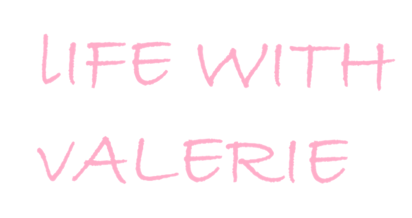
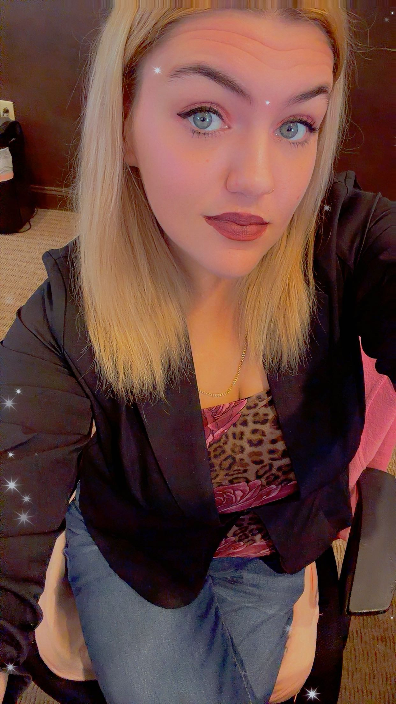
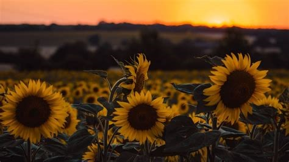
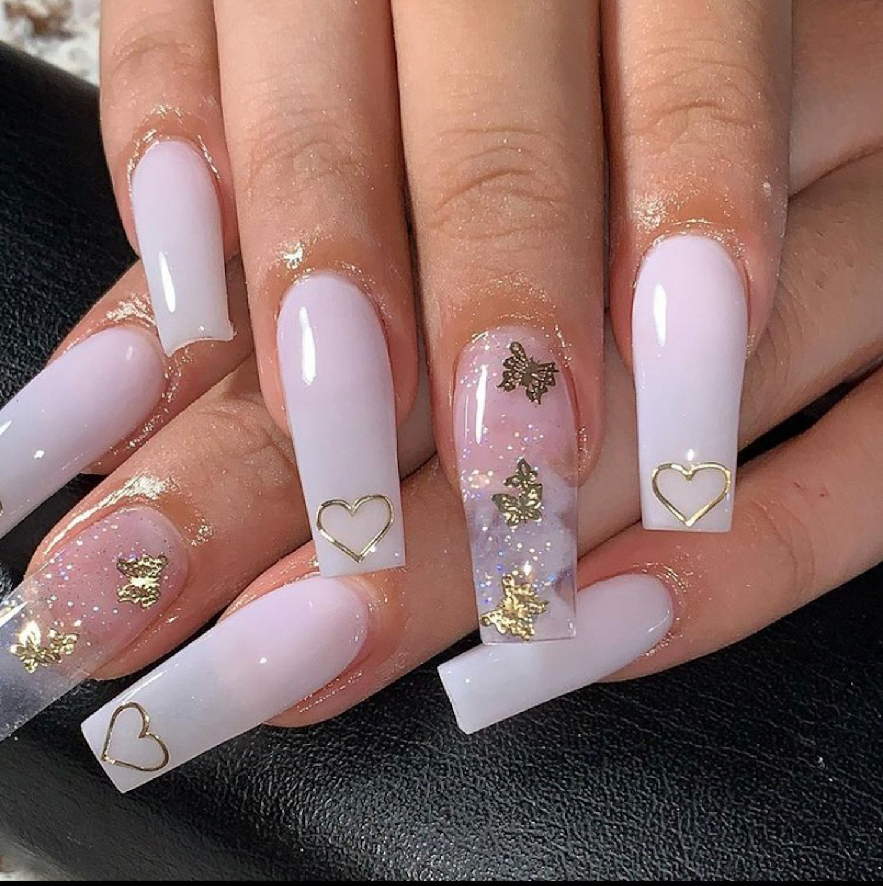
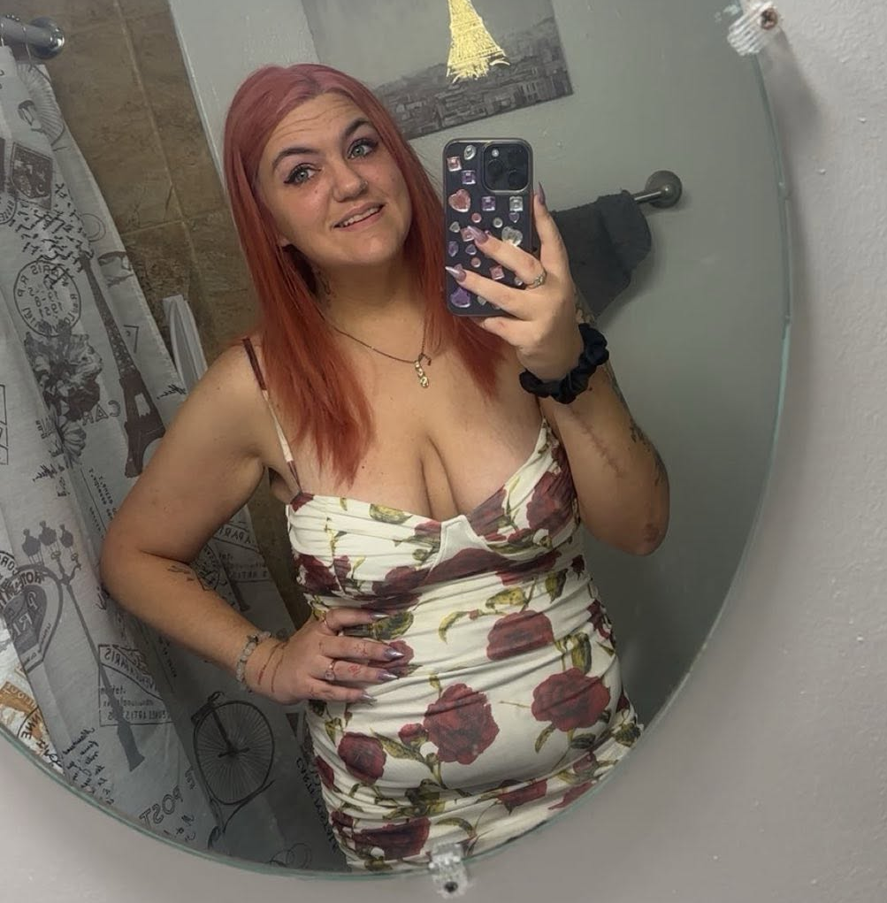
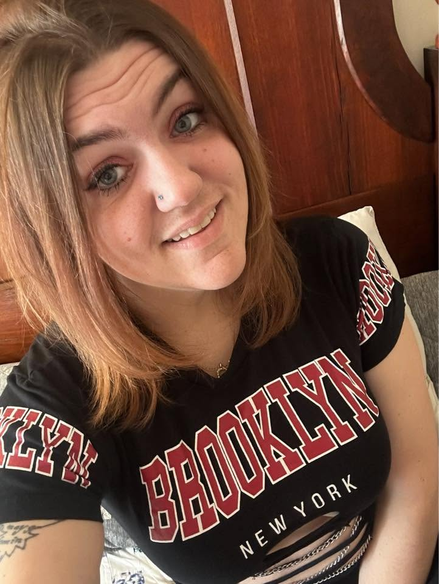
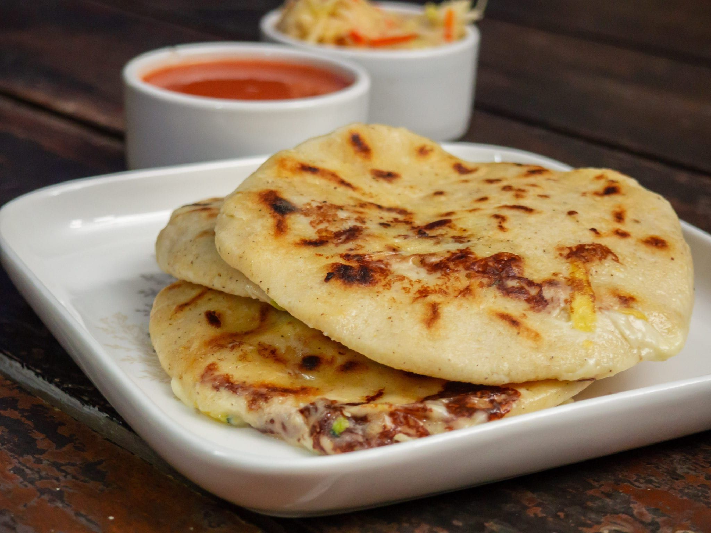

Here are a few of my favorite things:




My name is Valerie and I am a 36 year old 'gal' who has decided to change careers!!!
Did I mention I work full time too? When I am not working, I am studying and slowly
building this website and at the same time - my new career! I cant wait to share with you all
my journey from Dental Management to Web Development!
Today is September 4, 2026 and I am onmy journey to become a Web Developer!
I have been working in the dental field for almost 10 years and I am ready to make
a change. I have always been interested in technology and I have decided to take the leap
and pursue a career in web development. I am currently enrolled in a web development bootcamp
I decided to try and start building a website a few days ago and well here we are. Pretty basic
but remember, slow and steady wins the race! I am excited to share my journey with you.
Date: September 4, 2026
Today is Labor Day and I have been working on my website for 2 weeks now.
I am proud to say that with some trial and error, I have built this page
as my first portfolio project!! I am also working on a news letter style page as well.
Once I get Javascript under my belt I will be able to start working on my final project
which will be a mock Dental office Website - since my day job is an office manager for
a dental office. Til next time my friends!! P.S. I have added a photo of my favorite
food - pupusas!!
Date: September 7, 2026
I finally did it!!!! I am published and I am so excited!!! Please check back frequently
to check for any updated content and designs - which I will be doing as I continue to learn!
Date: 09/08/2026
